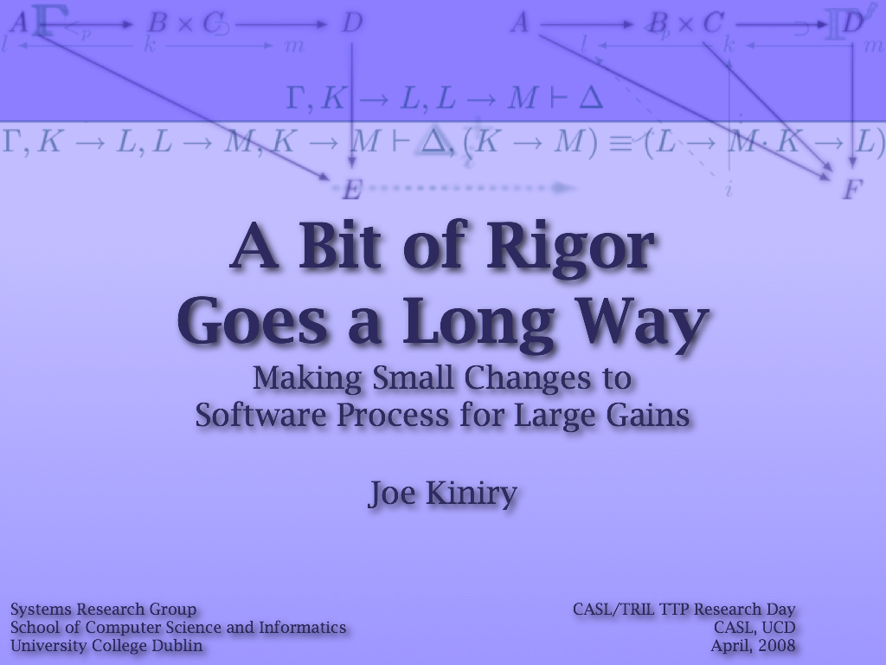

A Bit of Rigor
Joe Kiniry gave a talk entitled A Bit of Rigor: Making Small Changes to Software Process for Large Gains at the CASL/TRIL TTP Research Day.
|  | Abstract: Software developers are confusing creatures. They must chase a very dynamic discipline, but they dislike changing how they work. They love to write code, but they hate to write documentation. They use the same set of tools that they became comfortable with when they "matured" as software developers, but typically that was when they were finishing their last degree. Finally, their understanding of the field changes and evolves over time, but sometimes stalls. In this talk I suggest a number of simple concepts, tools, and techniques that have been successfully "gently" integrated into existing software development processes that produce large gains in a number of dimensions like quality, performance, and more. The unifying theme to these small changes is that they are all based upon the "gentle" use of rigor in software engineering. |